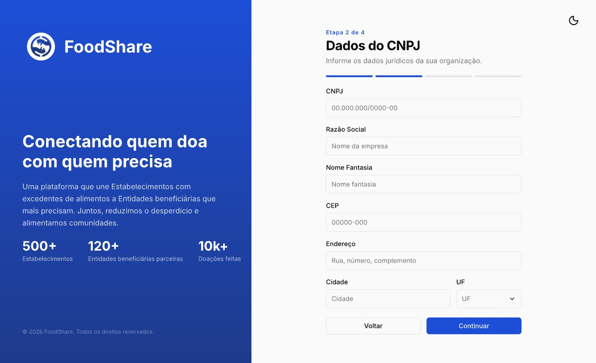
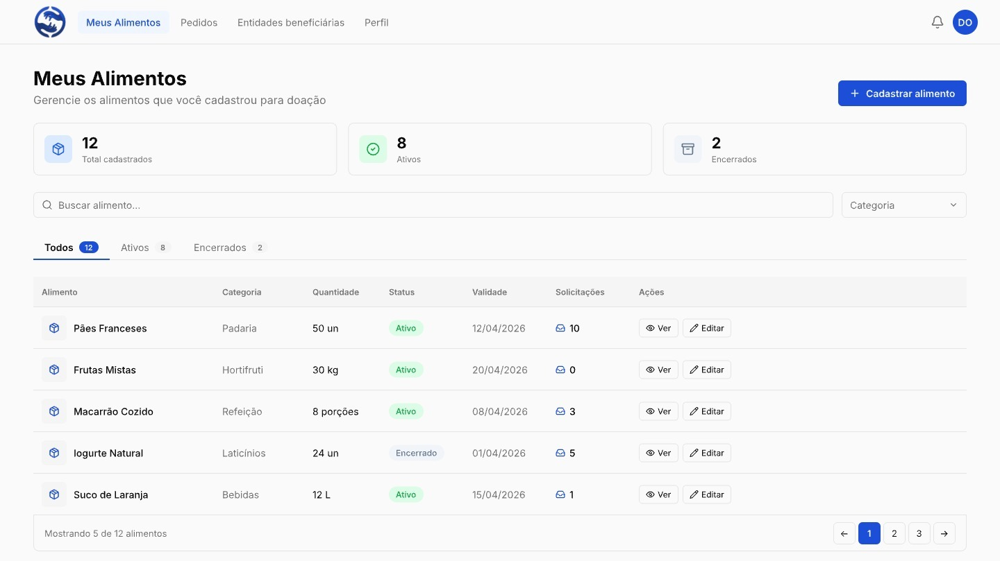
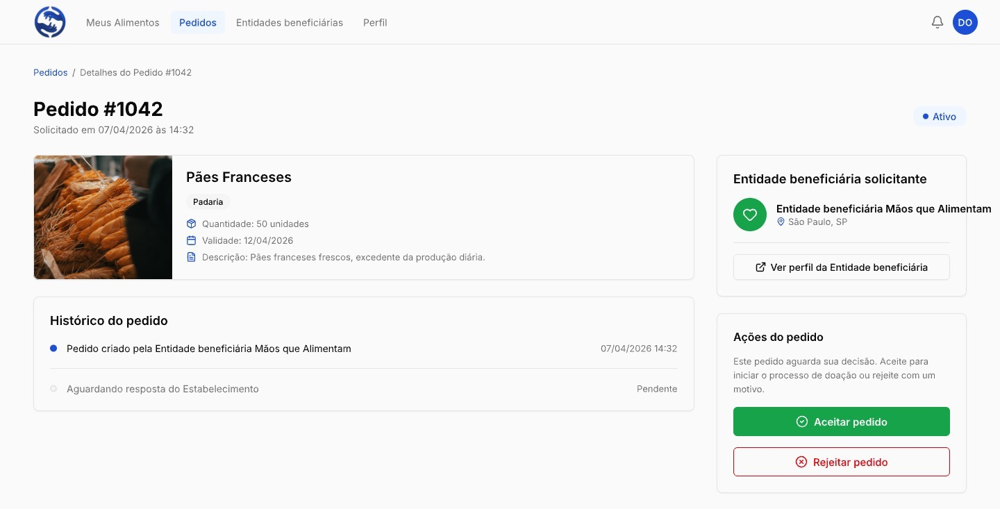

O Food Share une estabelecimentos com excedentes de alimentos a entidades beneficiárias que mais precisam, em poucos cliques, sem custo e sem burocracia.
0
Estabelecimentos
0
Entidades parceiras
0
Doações realizadas
Pensado para quem não tem tempo nem prática com sistemas complicados.
Sem taxa de cadastro ou de uso, para estabelecimentos e entidades.
Cadastro de alimento em menos de 1 minuto, direto do celular.
O excedente vira doação registrada, em vez de ir para o lixo.
Conecta negócios locais a entidades sociais da própria região.
Do cadastro do alimento até a confirmação da retirada, tudo acontece dentro da plataforma.

Cadastro simples. O estabelecimento informa CNPJ, endereço e cria o perfil em quatro passos curtos.

Alimento no ar. Nome, categoria, quantidade e validade, e o alimento já aparece disponível para as entidades.

Pedido e retirada. A entidade solicita, o estabelecimento aceita, e os dois acompanham o status até a confirmação.
Estabelecimentos e entidades que já usam o Food Share no dia a dia.
"Antes, o excedente ia direto pro lixo no fim do dia. Com o Food Share, cadastro em minutos e sei exatamente quem retirou sem depender de sorte ou de combinar por fora."
"A gente dependia de sorte pra conseguir doação, um telefonema aqui, outro ali. Com o Food Share, vejo o que está disponível e já solicito na hora. Mudou a rotina do abrigo."
O que a maioria pergunta antes de se cadastrar.
Sim. O cadastro e o uso da plataforma são totalmente gratuitos, tanto para estabelecimentos quanto para entidades beneficiárias.
Sim. Tanto estabelecimentos quanto entidades beneficiárias se cadastram com CNPJ, o que garante a confiabilidade das instituições na plataforma.
A entidade beneficiária solicita o alimento pela plataforma, o estabelecimento aceita o pedido, e a retirada é combinada diretamente entre as duas partes.
Sim. O Food Share não tem limitação geográfica e funciona em qualquer cidade do Brasil, pois a retirada e a entrega dos alimentos ficam por conta do próprio estabelecimento e da entidade beneficiária.
Alimentos próprios para consumo com excedente de produção ou próximos do vencimento, como pães, frutas, laticínios e refeições prontas.
Cadastre-se gratuitamente e comece a doar ou receber alimentos hoje mesmo.
Criar conta gratuitaDeixe seus dados e entramos em contato para ativar seu cadastro.
Nossa equipe entra em contato pelo celular informado em breve. Obrigado por fazer parte do Food Share.